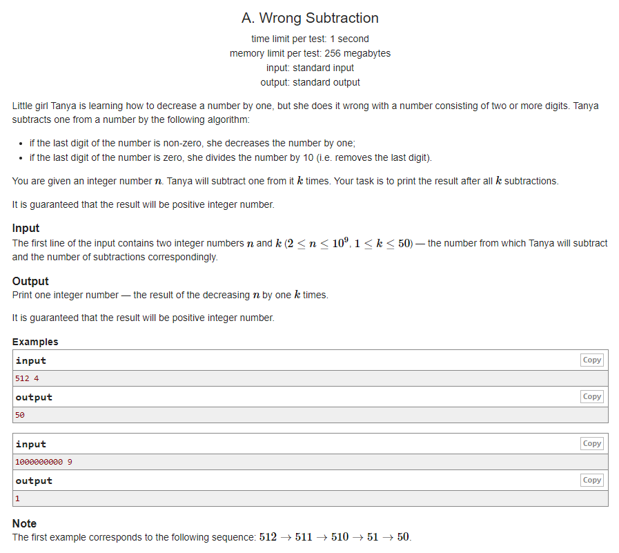

#INFO
RATE : 800
출처 : Codeforces Round #479 (Div. 3)
https://codeforces.com/problemset/problem/977/A

#SOLVE
문제에서 주어진 조건대로 그대로 풀이하기만 하면 되는 간단한 문제였다.
if the last digit of the number is non-zero, she decreases the number by one
만약 digit(n)의 마지막 자리의 수가 0으로 끝나지 않는다면 1을 뺀다.
if the last digit of the number is zero, she divides the number by 10 (i.e. removes the last digit).
만약 digit(n)의 마지막 자리의 수가 0으로 끝난다면 10으로 나눈다.
n = 512, k = 4 인 상황을 예시로 들어 보도록 하자.
512는 마지막 자리가 2이기에 1을 빼준다. → 511
511은 마지막 자리가 1이기에 1을 빼준다. → 510
510은 마지막 자리가 0이기에 10으로 나누어 준다. → 51
51은 마지막 자리가 1이기에 1을 빼준다. → 50
k가 4이기에 4번 계산을 모두 수행하면 50이 도출된다.
#CODE
#include <iostream>
using namespace std;
int main(){
int n, k;
cin >> n >> k;
while(k--){
if(n % 10 == 0) n /= 10;
else n--;
}
cout << n << '\n';
return 0;
}